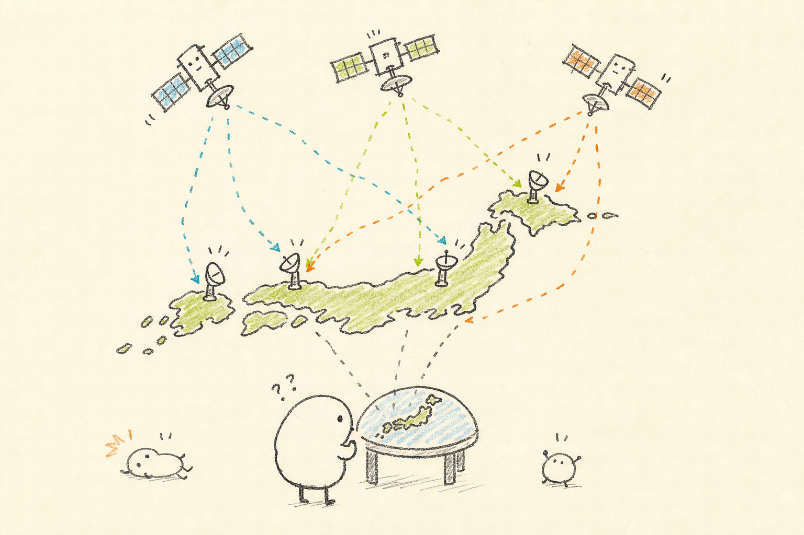
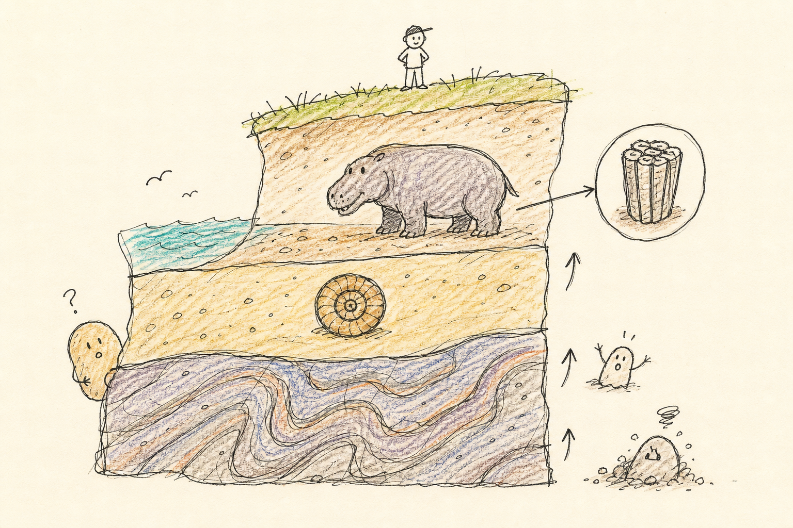
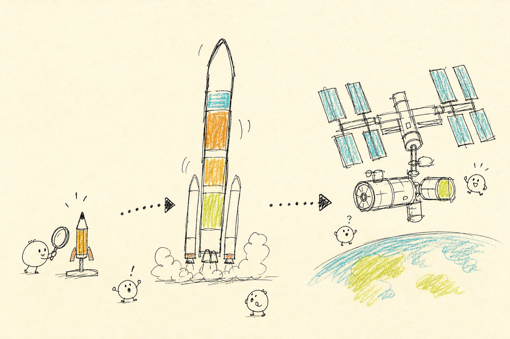

送信フォームが開いたら、内容を確認して「送信」を押してください。圏外で開けないときは、電波が入る場所でもう一度このボタンを押せばOK。成績優秀者は納涼会で表彰します！
ようこそ、移動サロン2026へ
今日は茨城県つくば市の3つの科学施設をめぐる日帰りツアーです。このアプリは、行きのバス約2時間で見学先の予備知識をさらっと仕入れるための予習ガイド。
展示の中身のネタバレはしません。「これを知ってから見ると、現地が何倍も面白くなる」——そんな背景のお話をご用意しました。
そして今年はクイズ選手権を開催します。各施設に現地の展示を見ないと答えられない3択クイズが全20問。バスの中で読み物を予習しておき、現地で答えを探してください。全問回答するとこのホーム画面からエントリーでき、成績優秀者は夜の納涼会で表彰します🏆（同点の場合は、20問目に答え終わった時刻が早い方が上位です）
※ 一度このページを開けば、以降は電波がなくても動きます。高速道路でも見学中でも安心してどうぞ。
今日めぐる3つの施設
つくば市には国の研究機関が数多く集まっています。今日はその中から「地図」「大地」「宇宙」——スケールがどんどん大きくなる3つの世界をはしごする欲張りコースです。
🕐 当日のスケジュール
2026年7月25日（土）
| 11:00 | 千代田区立秋葉原公園 集合📍 |
|---|---|
| 11:30 | バス出発 車内でこの予習ガイドをどうぞ（約2時間） |
| 13:30 〜14:40 | 🗾 地図と測量の科学館📍（70分） VTR10分＋説明30分＋自由見学30分 |
| 15:00 〜15:40 | 🪨 地質標本館📍（40分） 自由見学 |
| 15:50 〜16:45 | 🚀 JAXA 筑波宇宙センター📍（55分） 展示館自由見学。16:00〜約40分の説明員ガイドあり（参加は自由） |
| 17:00 | つくば出発 帰りのバスでクイズ選手権のエントリー送信＆ふりかえりクイズをどうぞ |
| 18:30 | 秋葉原 到着 |
| 19:00〜 | 🏮 納涼会 KICHIRI 秋葉原📍 |
各施設の「時間の使い方のコツ」は、それぞれの施設ページの最後の読み物にまとめてあります。

📖 予習読み物（6項目）
タイトルを押すと開きます。読んだ項目には「✓読了」がつきます。
1国土地理院ってどんなところ？✓読了
国土地理院は、日本の測量と地図づくりの「総本山」ともいえる国の機関で、本院はここつくば市にあります。日本のあらゆる地図の土台になる測量（基本測量）を担っていて、ふだん私たちがスマホで見ている地図も、元をたどれば国土地理院の測量成果に行き着きます。
「地図と測量の科学館」はその敷地内にある展示施設。地図や測量の歴史、原理やしくみ、新しい技術を総合的に展示した、全国でも珍しい施設です。常設展示室は「地球に向かう」「情報に向かう」、そしてもうひとつ——3つのテーマで構成されています（3つ目が何かは、現地クイズでどうぞ）。
「地図を作る側」の世界をのぞける機会はなかなかありません。ふだん何気なく使っている地図の“製造元”を訪ねる、めったにない機会です。
2伊能忠敬——55歳から日本を歩いた男✓読了
江戸時代の商人・伊能忠敬（いのう ただたか、1745〜1818）は、家業を隠居したあと50歳で江戸に出て天文学を学び直し、55歳（1800年）で蝦夷地（今の北海道）への測量の旅に出発しました。以後17年ほどかけて日本中を自分の足で歩いて測量し、日本で最初の実測による日本地図を作り上げます。
科学館には、忠敬の死後に弟子たちが仕上げた「伊能図」（関東版）が展示されています。約200年前に歩いて測った地図が、現代の地図と重ねてもほとんどずれない——その正確さは、現物の前に立つと実感が違います。完成した年は展示の解説でチェックを（現地クイズに出ます）。
隠居後の55歳からの再スタートで歴史に残る大仕事。人生後半の挑戦の話として、今夜の納涼会の乾杯の挨拶にも使えるかもしれません。
3すべての地図の出発点「基準点」✓読了
地図づくりは「正確な位置がわかっている点」を少しずつ増やしていく作業から始まります。山頂などに置かれた三角点、道路沿いの水準点——登山やお散歩で見かけたことがある方も多いはず。
その原理が「三角測量」。距離のわかっている2点から遠くの目標への角度を測れば、直接行けない場所までの距離も三角形の計算で求められます。
三角測量の考え方
現代版の基準点が「電子基準点」です。GNSS（GPSなどの測位衛星）の電波を24時間受け続けるアンテナで、全国に約1,300点。測量の基準になるだけでなく、地震国日本の地面の動き（地殻変動）を監視する役目も担っています。
4地図記号と等高線——地図を「読む」コツ✓読了
地形図の主役は「等高線」——同じ高さの地点を結んだ線です。読み方のコツはただひとつ、線の混み具合。間隔が狭いところは急な斜面、広いところはなだらか。慣れると、線の密度だけで山の形が頭の中に立ち上がってきます。
もうひとつの主役が「地図記号」。神社、温泉、田んぼ、果樹園……限られた紙面に大量の情報を詰め込むための、いわば全国共通の言語です。時代とともに新しい記号が生まれ、役目を終えて消えていく記号もあります。
展示で昔の地図と今の地図を見比べるときは、「どんな情報を、どんな線と記号で表しているか」に注目してみてください。同じ土地でも、時代によって地図が伝えようとするものが違うのがわかって面白いですよ。
5空から地図を作る——測量用航空機「くにかぜ」✓読了
現代の地図づくりに欠かせないのが「空中写真測量」。上空から少しずつ位置をずらして撮った2枚の写真を立体視すると、地形が浮かび上がって見えます。これをもとに地形を描き起こすのです。
その撮影を担った専用機が「くにかぜ」。初号機は1960年から1983年まで、23年間ひたすら日本列島を飛び続けました。総飛行距離は「地球何周分」と表せるほどの驚きの数字——いくつかは、屋外に展示されている実機の解説でどうぞ（現地クイズに出ます）。
館内には、世界初の図化機「オートカルトグラフ」も。空中写真から地図を描くための機械で、驚くほど昔にこの発想があったことに驚かされます。何年製かは現地の解説でチェックを（これも現地クイズに出ます）。
6⏱ 70分の使い方のコツ✓読了
前半はVTR（10分）と職員の方の説明（30分）。勝負は後半の自由見学30分です。
おすすめは、まず屋外の「地球ひろば」へ。名物の「日本列島球体模型」は、直径約22mの巨大な球体の一部が地面から盛り上がったもので、上に乗ることができます。目の高さ（1.5m）で立つと、ちょうど300km上空から日本列島を見下ろしたのと同じ眺めになる、という仕掛けです。
日本列島球体模型のしくみ
表面の日本地図は陶板に焼き付けてあり、屋外で何年も風雨にさらされても色あせないようになっています。
地球ひろばには測量用航空機「くにかぜ」の実機と、巨大な「つくばVLBIアンテナ」の部品展示も。残った時間で常設展示室に戻り、伊能図などをじっくりどうぞ。現地クイズの答えは屋外3問・館内4問に散らばっています。
下のクイズは現地の展示を見て答える問題です。バスでは読み物で予習だけしておき、答えは展示や解説パネルで見つけてください。3施設・全20問に回答すると、ホーム画面からクイズ選手権にエントリーできます。成績優秀者は納涼会で表彰！
🔍 現地クイズ（全7問）
各問の「📍見る場所ヒント」を頼りに、展示で答えを探してください。
- 国土地理院「地図と測量の科学館」
https://www.gsi.go.jp/MUSEUM/ - 同・常設展示室 https://www.gsi.go.jp/MUSEUM/p06.html
- 同・地球ひろば https://www.gsi.go.jp/MUSEUM/p08.html
- 国土地理院「測量・地図ミニ人物伝：伊能忠敬」
https://www.gsi.go.jp/KIDS/MEMORI/inou.htm - 国土地理院「電子基準点」
https://www.gsi.go.jp/eiseisokuchi/eiseisokuchi41012.html

📖 予習読み物（6項目）
タイトルを押すと開きます。読んだ項目には「✓読了」がつきます。
1地質標本館ってどんなところ？✓読了
地質標本館は、国立研究開発法人・産業技術総合研究所（産総研）の地質調査総合センターが運営する博物館です。日本の地質調査の歩みとともに集められてきた岩石・鉱物・化石の標本がずらりと並ぶ、いわば「日本の大地の資料室」。入館は無料です。
研究所の中にある博物館なので、展示されているのは研究の現場で実際に使われてきた「本物の標本」たち。展示は4つの展示室に分かれ、地球の歴史から、資源、火山や地震まで、足元の大地の話が一通りそろいます。
ツアー当日は特別展「第四紀（だいよんき）」も開催中（2026年6月30日〜10月25日）。「第四紀って何？」は次の項目でどうぞ。
2地質年代——地球の歴史年表の読み方✓読了
地球の歴史は約46億年。あまりに長いので、地質学では「ジュラ紀」「白亜紀」のような時代名で章立てして呼びます。世界共通の「地球の歴史年表」です。
46億年を1年のカレンダーに圧縮してみると、感覚がつかめます。1月1日に地球が誕生したとすると、人類の時代はなんと大晦日の終わりぎわ。私たちがいま生きている時代「第四紀」（約258万年前〜現在）も、この縮尺では1年の最後のほんのわずかです。
地球46億年を「1年」に圧縮すると
この時間感覚を持って展示室に入ると、目の前の石ころ一つが「何千万年もの時間の証人」に見えてきます。特別展「第四紀」は、まさに“私たちの時代”を掘り下げる企画です。
3地質図——足元の「大地の設計図」✓読了
「地質図」とは、地面の下にどんな種類の岩石や地層が、どの時代のものとして広がっているかを色分けして描いた地図です。地下資源の開発や防災、土木工事の基礎資料として使われる、地味ながら超重要なインフラ情報。地質調査総合センターの仕事の原点も、この地質図づくりにあります。
「岩石の種類 × 時代」の組み合わせで塗り分けるため、1枚の地質図には驚くほど多くの色が使われます。凡例（色の説明書き）と見比べながら眺めると、日本の地下がパッチワークのように多様なことが見えてきます。
1階には、日本列島の精密な立体模型に映像を投影する3Dプロジェクションマッピングもあり、地質図の世界を立体で体感できます。
4日本列島は「プレートの交差点」✓読了
地球の表面は「プレート」と呼ばれる巨大な岩盤に覆われていて、日本列島は複数のプレートがぶつかり合う場所に乗っています。だから日本には火山が多く、地震が多く、そして温泉が多い——この3つはワンセットの現象です。
2階の第3展示室「生活と地質現象」には、富士山と箱根火山の地質立体模型のほか、実物ならではの迫力ある標本が並びます。たとえば、地震で液状化した地層や、長野県のある断層を調査した壁面を、そのまま布に写し取った「はぎ取り標本」。ふだん見ることのできない“地面の中身”の実物です（断層の名前は現地の解説で——現地クイズに出ます）。
「地面の下は今も動いている」——それを実感してから帰ると、ニュースの地震報道の見え方が少し変わります。
5謎の絶滅哺乳類・デスモスチルス✓読了
1階の第1展示室で待っているのが、デスモスチルスの全身骨格（復元標本）。新第三紀（数百万年〜二千数百万年前）に生きていた、カバのような姿の絶滅哺乳類です。
不思議な形の歯（柱を束ねたような臼歯）が名前の由来で、どんな暮らしをしていたのかは長年の謎。近年の研究では「海を泳いで暮らしていたのでは」という説が有力になってきました。日本国内で発見された全身骨格は、世界的にも貴重な標本です。
恐竜でもゾウでもない、教科書に載らない「準主役」の絶滅動物。こういう生き物に出会えるのが、研究機関の博物館の醍醐味です。1階と2階を結ぶ「アンモナイト階段」もお見逃しなく。
6⏱ 40分の歩き方（優先順位つき）✓読了
今日いちばん滞在時間が短い施設です（自由見学40分）。全部をじっくりは難しいので、優先順位をつけて回りましょう。
① 1階・第1展示室（地球の歴史）——日本列島の3Dプロジェクションマッピングとデスモスチルスの全身骨格。まずここから。
② 2階・第3展示室（生活と地質現象）——富士山・箱根の立体模型と、断層・液状化のはぎ取り標本。実物の迫力はここが随一。
③ 特別展「第四紀」——当日開催中。“私たちの時代”の地質の話。
④ 余裕があれば——1階・第4展示室（岩石・鉱物・化石の分類展示）と、2階・第2展示室の太平洋の海底地形模型（海底の山脈や海溝が一望できます）。移動のときはアンモナイト階段をどうぞ。
滞在40分と短いので、読み物6の優先ルートに沿って回りながら答えを拾うのがおすすめ。1階で3問、2階で3問です。
🔍 現地クイズ（全6問）
各問の「📍見る場所ヒント」を頼りに、展示で答えを探してください。
- 産総研 地質調査総合センター「地質標本館」
https://www.gsj.jp/Muse/ - 同・常設展示フロアマップ
https://www.gsj.jp/Muse/exhibition/floor.html - 同・展示紹介「デスモスチルス」
https://www.gsj.jp/Muse/QR/jp/142.html - 同・特別展「第四紀」
https://www.gsj.jp/Muse/exhibition/archives/2026/2026_summer.html - 産総研プレスリリース「日本列島大型3Dプロジェクションマッピング」
https://www.aist.go.jp/aist_j/news/au20180219_2.html

📖 予習読み物（7項目）
タイトルを押すと開きます。読んだ項目には「✓読了」がつきます。
1筑波宇宙センターってどんなところ？✓読了
筑波宇宙センターは、日本の宇宙開発を担うJAXA（宇宙航空研究開発機構）の中核施設です。人工衛星の開発・運用、宇宙飛行士の訓練、そして国際宇宙ステーションの日本実験棟「きぼう」の運用管制——日本の宇宙活動の“現場”がここにあります。
見学できるのは、正門を入ってすぐの「ロケット広場」（本物のロケットがお出迎え）、展示館「スペースドーム」、企画展とミュージアムショップの「プラネットキューブ」など。
つまり今日は、テレビのニュースで「筑波の管制室」と呼ばれるあの場所の敷地に、実際に足を踏み入れることになります。
2日本のロケット、最初は鉛筆サイズだった✓読了
日本の宇宙開発の出発点は、1955年。糸川英夫博士らが東京・国分寺で水平発射した「ペンシルロケット」です。その大きさ、なんと全長23cm・直径1.8cm・重さ約200g。本当に鉛筆サイズでした。
そこから約70年。日本は人工衛星も宇宙探査機も自前のロケットで打ち上げる、世界でも数少ない国になりました。H-II、H-IIAを経て、現在の主力はH3ロケットです。
ロケット広場に展示されているH-IIロケットの実機は全長約50m。23cmの鉛筆から始まった歴史の到達点として見上げると、感慨もひとしおです。
H-IIロケット実機と人の大きさ比べ
3「きぼう」日本実験棟——ISS最大のモジュール✓読了
国際宇宙ステーション（ISS）は、地上約400kmの上空を回り続けている有人の宇宙施設。その一角に日本が開発・運用する実験棟「きぼう」があります。ISSを構成するモジュール（区画）の中で最大で、日本にとって初めての有人宇宙施設です。
「きぼう」は、宇宙飛行士が中で作業する「船内実験室」、宇宙空間に実験装置をさらす「船外実験プラットフォーム」、荷物の保管室、ロボットアームなどで構成されています。スペースドームには、この「きぼう」の実物大モデルがあり、その大きさを体感できます。
そして「きぼう」の24時間の運用管制をしているのが、まさにこの筑波宇宙センター。展示を見たあとは、宇宙飛行士のニュースが少し“自分ごと”になります。
4人工衛星は何をしている？✓読了
スペースドームには、日本の人工衛星の試験モデル（開発時の試験に使われた機体）がずらりと並びます。陸地を観測する「だいち」、気候変動を見つめる「しきさい」、データ中継の「こだま」、月周回衛星「かぐや」など。それぞれ「何のための衛星か」を意識して見ると、宇宙が急に実用の世界になります。
展示館では、燃焼試験で実際に使われた本物のロケットエンジン（LE-7A・LE-5）も見られます。詳しくは読み物6で。
5「はやぶさ」が教えてくれたこと✓読了
日本の宇宙探査を語るうえで外せないのが、小惑星探査機「はやぶさ」。小惑星のかけらを採取して地球に持ち帰る「サンプルリターン」を世界で初めて成し遂げ、2010年に満身創痍で帰還した物語は、映画にもなりました。後継機「はやぶさ2」は小惑星リュウグウの砂を2020年に持ち帰っています。
なぜ小惑星の砂がそんなに大事なのか。小惑星は太陽系ができた頃の姿を残す「タイムカプセル」で、その成分を調べると、地球や生命の材料がどこから来たのかを探る手がかりになるからです。
スペースドームには「はやぶさ2」の実物大模型が展示されています。イオンエンジンやサンプル採取の装置など、“働く探査機”の姿をじっくりどうぞ（打ち上げ年は解説パネルで——現地クイズに出ます）。
6ロケットエンジンは「本物」を見よ✓読了
スペースドームに展示されているロケットエンジン「LE-7A」「LE-5」は、模型ではなく、燃焼試験で実際に使われた本物です。
エンジンはロケットの心臓部であり、開発でいちばん苦労するところ。マイナス200度以下の液体燃料を燃やして数千度の炎を吹き出す、極限の機械です。本物ならではの配管の複雑さや質感、大きさを、ぜひ間近でじっくり。
エンジンの近くには、大きな地球のオブジェ「ドリームポート」も。何分の1スケールの地球なのかは、現地の表示でチェックを（現地クイズに出ます）。
7⏱ 55分の使い方——ガイドに参加する？✓読了
16:00から約40分、説明員によるガイドがあります（スペースドームでは説明員によるガイドが1日6回行われています）。滞在は55分なので、ガイドに参加するとほぼガイド一本、参加しなければ丸ごと自由見学。ここが思案のしどころです。
ガイド参加がおすすめの方——展示の背景話をプロの解説で聞きたい方。初めての見学で「どこを見ればいいか」を任せたい方。効率よく要点を押さえられます。
自由見学がおすすめの方——自分のペースで写真を撮りたい方、ミュージアムショップ（プラネットキューブ）でお土産も見たい方。ロケット広場のH-II実機の記念撮影もお忘れなく。
どちらでも損はありません。この予習ガイドを読んだ皆さんなら、自由見学でも十分楽しめるはずです。
ここが最後の施設。屋外のロケット広場で1問、スペースドームで6問です。全20問に答え終わったら、ホーム画面からクイズ選手権へのエントリーをお忘れなく！
🔍 現地クイズ（全7問）
各問の「📍見る場所ヒント」を頼りに、展示で答えを探してください。ガイド参加中でも、通りがかりの展示でチラ見でOK。
- JAXA 筑波宇宙センター（見学案内）
https://visit-tsukuba.jaxa.jp/ - 同・展示館スペースドーム
https://visit-tsukuba.jaxa.jp/exhibition.html - 同・施設案内
https://visit-tsukuba.jaxa.jp/visit.html - 同・スペースドーム見学パンフレット（PDF）
https://visit-tsukuba.jaxa.jp/assets/img/download/spacedome.pdf - JAXA「きぼう」日本実験棟
https://iss.jaxa.jp/kibo/ - JAXA宇宙科学研究所「日本の宇宙開発の歴史」
https://www.isas.jaxa.jp/j/japan_s_history/
3施設めぐり、おつかれさまでした。帰りのバスでは、クイズ選手権へのエントリーと、今日一日のふりかえりクイズをどうぞ。19時からの納涼会（KICHIRI秋葉原）の話のタネもご用意しました。
現地クイズ20問に答え終わった方は、ホーム画面のエントリーカードから結果を送信してください。成績優秀者は納涼会で表彰します。圏外のときは、電波が入ってからでOKです。
✏️ 3施設ふりかえりクイズ（全5問）
こちらは採点対象外のお楽しみ。今日の総まとめに、隣の席の方とどうぞ。
🏮 納涼会の話のタネ
- 伊能忠敬は55歳で測量の旅へ。隠居後に天文学を学び直してからの大事業でした。「人生後半の挑戦」の乾杯ネタにどうぞ。
- デスモスチルスの暮らしは今も謎。近年は「海を泳いでいた」説が有力に。発見から何十年たっても謎が残っている——それも科学の面白さです。
- 日本のロケットの原点は全長23cmのペンシルロケット。約70年で全長50mのH-II、そしてH3へ。
- ISSが飛ぶ高さは約400km。今日の秋葉原〜つくばの移動の7倍ほど先には、もう宇宙ステーションが飛んでいます。宇宙は意外とご近所です。
- くにかぜ初号機の総飛行距離は地球5周半。23年間、日本中の空を飛んで写真を撮り続けました。
本日はご参加ありがとうございました。18:30秋葉原着、19:00からKICHIRI秋葉原にて納涼会です。もうひと息、おつきあいください！